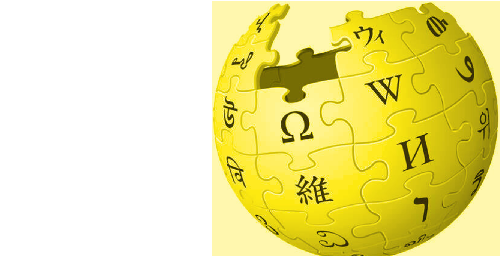
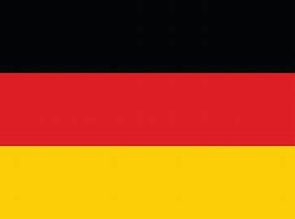
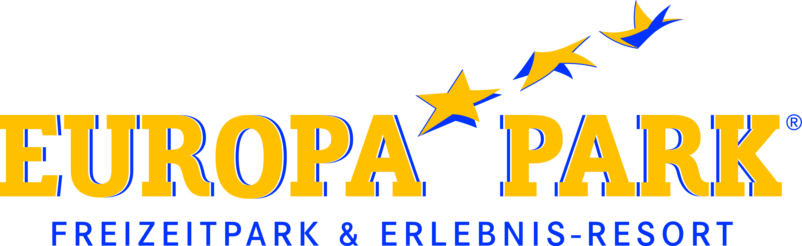
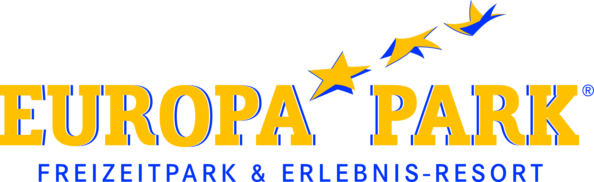

Baptiste Dutoit French version here
CEVEDIA 
Welcome to the cevedia page of Mr. Baptiste Dutoit. This site is not created by a professional but by a student who seeks to diversify in a way improve its range of skills in a practico-ludic way so please be lenient about the quality of the code. Obviously any resemblance to another online encyclopedia collaborative and free would be completely fortuitous. I wish you a good reading.
Current situation
Baptiste (Bernard) Dutoit, born May 18, 2003 in Marcq-en-Baroeul in France, is a french student educated at JUNIA HEI, a general french engineering school.
Sensitive to current ecological issues and the development of new technologies, Baptiste has chosen to move towards an international option "Smart and Resilient
Cities". This master's degree completely in English addresses the notions of intelligent development, in the fields of energy, mobility and new technologies, in the cities of
tomorrow.
With a view to validating this Master's degree next year, Baptiste is looking for an internship abroad and a work-study program as an assistant engineer
in the sector of renewable energies, smart grid management or Data analysis.
| Criterias | International internship search form | Work-study search form |
|---|---|---|
| Contract type | Professional internship | Professionalisation contract |
| Duration | 3-4 months | 12 months |
| Beginning date | From May 1, 2024 | From September 1, 2024 |
| Location | Out of France | Lille, France |
Skills
| Soft skills | Technical skills | Informatical skills |
|---|---|---|
| Curiosity Open-mindedness Creativity Self-taught |
Energies Energies vertes (photovoltaïque, nucléaire, éolienne...) Thermodynamics/Heat transfer Smart Management System/Smart Grid Energetic transition |
Java/JavaFX/Scenebuilder JavaFX development of a 'Mille Bornes', a 'Pendu', a 'Mastermind', a 'Monopoly and a football Quizz Scenebuilder as graphic interface |
| Leadership Teamwork Sense of relationship Persuasion |
Construction Building Information Modeling (BIM) Architecture Materials resistance STEIP Project |
Python/Jupyter/Arduino Meteorological analysis project as part of the management of an urban site Advanced formation in 'classes préparatoires MP' |
| Competition spirit Strength of proposal |
Informatic Data analysis Application development Embodied systems Internet of Things |
Pack office/SQL/VBA/PowerBI Project presentations League 1 teams data processing project Certification PIX |
| Adaptability Pressure management Organisation |
Economy Firm management Marketing Communication Accountability Project Management Circular cities |
Rhino/Revit/AutoCad/QGIS Rehabilitation/construction projects 2D maps and plans creation 3D modeling Environmental and parametric design |
| Baptiste Dutoit |
|---|
 |
| Status Student |
| Current Formation Hautes Etudes d'Ingénieur (JUNIA HEI) |
| Master option Smart And Resilient Cities |
| Diplomation year 2025 |
| Nationality |
| Languages  German (B2) |
| Diplomas FCE Cambridge B2 (2020) Scientific Baccalaureate (2020) Goethe Institut B1 (2019) 'Brevet des Collèges'(2016) |
| Formation HEI engineer cycle 2022- HEI classes préparatoires MP 2020-2022 Highschool Saint Adrien La Salle 2017-2020 Secondary school Jeanne d'Arc 2013-2017 |
| Contact dutoit.baptiste@gmail.com +33 7 499 98 73 99 
|
Professional experiences
- Restauration employee, Hotel Colosseo, Europa-Park resort Location: Rust, Germany Date: May 2023 - July 2023 (2 months)
During the summer of 2023, from May to July, Baptiste embarked on a professional experience
in total immersion in Germany as part of the International Break (IB) imposed by HEI.
The IB is a period during which each student must go to work outside France in order to
to gain professional experience, discover new cultures and change your way
to see the world at the same time.
Determined to drastically improve his level in German,
it is therefore quite natural that Baptiste chooses to direct his destination towards the homeland of thinkers and
poets ("das Land der Dichter und Denker"), in other words Germany. After several months of research and
numerous interviews, he will end up being hired for a period of 2 months in the most famous
European amusement park, Europa-Park, and more precisely in a 4-star-superior hotel, the Hotel
Colosseo.
Concerning the purely professional part, these schedules were mainly planned
in the morning from 7 a.m. to 4 p.m., 5 days a week. He took care of receiving clients of all nationalities, designating them
a table and finally take their order. It was an excellent linguistic strengthening exercise for him.
For the extra-professional part, Baptiste lived alone in a tent in a border campsite on the other side of the Rhine, in Rhinau.
In order to get to work at 7 a.m., he had to get up at 5:30 a.m. and cycle for an hour. Conditions far from ideal, of course, but
nevertheless extremely formative for his future life; he repeated to himself all the time that to win without danger, we
triumph without glory. He finally returned to France at the end of July 2023, having gained a wonderful experience.
 

- Worker in a pharmacy warehouse, Norcap SAS Location: Roubaix, France Date: July 2022 - August 2022 (1 month)

As part of a worker internship, Baptiste worked for 1 month in a warehouse storing pharmaceutical products. in order to acquire new professional experience as a worker to better understand the business world at all levels. His objective was to prepare orders for pharmacies, carry out stock inventories and clean the warehouse. A very educational experience which allowed him to discover the pharmaceutical field.
- Cashier student job, Carrefour Market Location: Hem, France Date: August 2021 - June 2022 (10 months)
At the same time as my 2nd year of MP preparatory classes, Baptiste held the position of Cashier/Storekeeper as a student job. A tiring but strong period due to its pace and the lessons he was able to learn. Having the obligation to complete a worker internship, Baptiste broke his student contract to start a new experience.

- Order picker, Chronodrive Location: Croix, France Date: June 2021 - July 2021 (1 month)

Baptiste's first professional experience was as an order preparer at Chrnonodrive, in the fresh produce section. A one-month experience which allowed him to discover the working world in a young and dynamic company. The adaptation was somewhat complicated due to his lack of experience and the pace imposed by the job of order preparer.
- Observation internship, Ankama
Although it is not really professional experience and the majority of people are unaware or even forget the existence
This observation course, for Baptiste, was a very memorable week. Ankama is an independent digital creation group
specialized in the field of entertainment and essential in the world of video games, having notably produced the famous DOFUS game.
From the graphic development of the universe to the computer code of video games, all areas were presented to him.
During this internship Baptiste fell in love with the field of IT development and application creation. It is not only
that a few days later, he decided to start creating his own games.

Extra-professional experiences
- Community life at JUNIA HEI (President P'heitanque - Secretary Winnie Whei - Vice-President Las'heir Game)
In addition to the level of training, what also makes the Grandes Écoles charming is their ability to create links and contacts.
among the workers of tomorrow. This is why, during his studies at HEI, Baptiste was heavily involved in the associative life of his school.
He was first of all the Vice-President of the Las'heir Game association, which, as its name suggests, aims to organize Laser Game games.
at advantageous prices between HEI students only. It is a small association (2 people) which therefore trains these 2 representatives in many areas
such as communication, event organization and administration.
Subsequently, he joined Winnie Whei, the school's integration association, in which he held the position of secretary. He learned a lot there
things concerning administration but above all will have had a super enriching experience.
Today Baptiste is the president of the P'heitanque association and is now applying his associative skills acquired over the last 3 years,
particularly in terms of management and communication, to organize various sporting events and tournaments
of this great ball sport.
- Football Player/Coach (Villeneuve d'Ascq Métropole - JUNIA HEI)
Passionate about football, Baptiste started playing in clubs at the age of 5 (in the u6 category) at the Iris Club de Croix. In search of a higher level, he will leave this one to join
Villeneuve d'Ascq Métropole in u10, which would later become his favorite club. His integration was quick and efficient since he was upgraded to a higher category in his first year
and even obtained the captain's armband which he kept until he stopped playing club football to devote himself 100% to his studies. Subsequently, he will return to the field by joining team 1 of JUNIA HEI.
His role as captain brought him a lot of things, including taking responsibility at a very young age, communication skills on and in off the field and a sense of leadership.
In addition, playing at a relatively high level (Regional 2), allowed him to further develop his competitive spirit and his propensity to always want
take up new challenges.
In parallel with his career as an amateur player, he will also try his hand at the role of coach by first being an educator of youth
from his club at the time, children under 6 years old (u6) from Villeneuve d'Ascq Métropole, to then train the JUNIA HEI university team during the 2022-2023 season.
These stints as a coach gave him a broader vision from a footballing point of view, but also deep team management skills.
- Citizen commitment
As part of his civic commitment, Baptiste has contributed significantly to various initiatives
humanitarian and social. As a stretcher bearer during a pilgrimage to Lourdes in 2017, he provided help and support
to sick and disabled people, thus demonstrating altruism and compassion towards others.
His active participation in religious cohabitation programs in Taizé testifies to his desire to promote interreligious dialogue.
and mutual understanding within society.
In addition, Baptiste devoted time to helping the most deprived by welcoming
the beneficiaries of Restos du Cœur, thus illustrating its commitment to the fight against poverty and its desire to contribute
positively to his community.
Realized projects
- Web developer for the TBRM hotel agency, Tunon Bordeaux

The TBRM agency is an agency represented by students from the hotel and luxury school, Tunon Bordeaux. During the 2024 Business Game, the TBRM agency was to present
a project to implement 4 new Casa Barbara sites, peaceful villages to support seniors in their end of life.
It is therefore within the framework of a jury
project presentation that the sales manager, Mattéo Dessenne, contacted Baptiste Dutoit in order to create, in parallel with his studies, a showcase site in the colors of Casa Barbara
which highlights the different new sites and their associated activities.
It was a most enriching mission for Baptiste, since it allowed him to
on the one hand to practice Web Development which he learned self-taught, and on the other hand to collaborate with students
from another world, the world of hotels, luxury and tourism.
You can visit the site by clicking on this link.
- Urban Studio, Urban site rehabilitation project
Project explanation

As part of his course at HEI, Baptiste must apply his skills acquired in town planning, energy and mobility by carrying out this rehabilitation project from the Edard site in Croix. This site was once a former textile industrial zone but is now largely abandoned. The objective of this project is therefore firstly to give back a second life for this historic site by taking into account the environment that surrounds it. However, certain constraints apply to this project. Indeed, this site must contain at least 4000 m² of offices, restaurants and other types of service, but also 215 housing units (76 social housing and 139 owner housing). The objective here is to create a multi-use site with a connection between residents and activities. As you can see in these photos and this QGIS map that he created, the site is located in the city center and the buildings around are mainly composed of red bricks. The advantage is that the location of this site already allows it to offer various activities and an easy connection to the metro and buses, on the other hand, the objective here will be to revitalize this site so that it impacts this aging area of Croix.

Proposed solutions

The project is being completed today and is called "Vies Croixées" in reference to the desire to bring together the inhabitants and workers of this site through
the establishment of different activities (restaurants, gym and a cyber café equipped with an arcade room), public spaces (co-working and shared balconies) and
exterior facilities (kiosk, lake and common gardens).
Concerning the constructions carried out, the site is being implemented, in compliance with the Local Urban Planning Plan (PLU)
8 new buildings, some equipped with parking lots and underground spaces. As you can see on the AutoCad plans, they are oriented towards the south in order to exploit
maximum natural solar resources (light and heat).
These buildings have a strong particularity within the framework of "Vies Croixées", it is an exterior glass facade like
you can see it in the photo. It is a double skin which allows on the one hand to create a common space between the different inhabitants of a building, and on the other hand allows to improve thermal insulation
and to better manage the brightness according to the position of the sun and the different orientations of the building.

- Projects of Building Information Modeling (BIM)
In order to develop smarter cities, Building Information Modeling (BIM) is essential.
Building Information Modeling (BIM) is a digital modeling method that makes it possible to design, build and manage urban infrastructure in a collaborative and coordinated manner. By integrating geospatial data, material information, costs and performance, BIM provides a detailed and accurate virtual representation of a project, allowing those involved to better visualize and understand every aspect of the project.
< br>This approach promotes better coordination between the different stakeholders, reduces errors and construction costs, and allows more efficient management throughout the life cycle of an urban infrastructure.
In a context of smart and resilient cities, where sustainability, resource management and resilience to crises are essential, BIM becomes an essential tool for designing and managing more efficient and sustainable cities.
This is why in the Master "Smart and Resilient Cities", BIM courses are taught where students carry out 3D modeling with Revit/Autocad.
These 2 different projects were carried out by Baptiste, with the help of plans provided by Professor Rania Wehbi.
- The Threading House, Circular city project
The Threading House is a project which aims to develop a circular economy system for
cities that want to be more resilient. This concept is oriented around textiles because today, people buy 60% more clothes than 15 years ago
and we keep these clothes half as long. In addition, 95% of textile waste is recyclable!
The concept is simple: The Threading House is a boutique
clothing repair which aims to encourage recycling, DIY and the circular economy. On the one hand, people wanting to repair their clothes can come and learn how to repair
imperfections or even personalize their clothes. On the other hand, people can come and give us back those that they no longer like in exchange for reduction vouchers in
partner stores. Then these clothes are sent by The Threading House to sorting centers which will pay us for this and will send these sorted textiles
will serve as raw materials for factories manufacturing various objects based on recycled textiles which will in turn be sold in other stores. There
The loop is closed thanks to this project from The Threading House. Do not hesitate to watch the video produced by Baptiste Dutoit. It would be also an opportunity to hear his wonderful english accent.
- STEIP Project (Scientific, Technological and Economic Integration Project), Design of an innovative Low-Tech rainwater recovery system

During their 3rd year at HEI, each student goes through the famous STEIP Project, a Scientific, Technological and Economic Integration Project
during which the notions of project management are put to the test, obviously accompanied by various scientific skills. The particularity of this
exercise is that it is based on an innovation which aims to be Low-tech around a predefined theme. Baptiste introduces himself as project manager
around a theme of innovative rainwater recovery.
After intensive brainstorming, the main idea retained is to generate, using the fall
rainwater, electricity. Baptiste and his group will develop their project to install tanks on the roof by putting their scientific skills into practice
such as Resistance of Materials but above all skills in Project Management.
This project was an experience
completely new for Baptiste, because having the responsibility of Project Manager, he had to carry out tasks which were unknown to him such as a Gantt planning, meeting reportsor even a
mapping of the actors.
This experience will remain memorable for him, picking up along the way skills such as
teamwork, project organization and leadership, essential for a project manager.